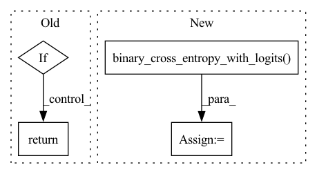

Pattern ID :11467

Before Change
pooled_output = self.dropout(pooled_output)
logits = self.classifier(pooled_output)
if labels is None:
return logits
else:
loss = F.binary_cross_entropy_with_logits(logits, labels.float())
return loss, logits
After Change
logits = self.classifier(pooled_output)
loss = F.binary_cross_entropy_with_logits(logits, labels.float())
loss = F.binary_cross_entropy_with_logits(logits, labels.float())
return loss, logits
class BertCombined(nn.Module):
In pattern: SUPERPATTERN
Frequency: 4
Non-data size: 4
Instances
Fragment ID: 39076276
Project Name: svjan5/medtype
Commit Name: 982c7e977da2c4dea0263c22ce8f8185e016839f
Time: 2021-03-19
Author: shikharvashishth@gmail.com
File Name: medtype-trainer/models.py
M Class Name: BertPlain
N Class Name: BertPlain
M Method Name: forward(5)
N Method Name: forward(8)
M Parent Class: nn.Module
N Parent Class: nn.Module
M File Name: medtype-trainer/models.py
N File Name: medtype-trainer/models.py
M Start Line: 15
M End Line: 34
N Start Line: 16
N End Line: 33
'>
Before Change
if self.mode == "mse":
return ((fea_s-fea_t)**2).mean() * self.factor
if self.mode == "pdf":
with torch.no_grad():
x1 = conf_t.sigmoid()
x2 = conf_s.sigmoid()
disagree = (x1 - x2) ** 2
disagree = disagree.sum(-1).unsqueeze(1).sqrt()
if self.multi_anchor:
disagree = F.avg_pool1d(disagree, kernel_size=6, stride=6, padding=0)
disagree = disagree.permute(0,2,1).expand_as(fea_t)
weight = disagree / disagree.sum()
return (weight*((fea_s-fea_t)**2)).sum() * self.factor
raise NotImplementedError
After Change
weight = weight / weight.sum()
loss_pdf = (weight*((fea_s-fea_t)**2)).sum() * self.factor
loss_cls = F.binary_cross_entropy_with_logits(conf_s, x1, reduction="none") * disagree
loss_cls = loss_cls.sum() / (x1>0.5).float().sum()
loss_reg = F.mse_loss(loc_s, loc_t)
'>
Fragment ID: 39076277
Project Name: zhanghengdev/mutualguide
Commit Name: d9f6d3090253f102f88a9b09b343ba674d3a4367
Time: 2021-12-08
Author: heng.zhang@irisa.fr
File Name: utils/loss/hint_loss.py
M Class Name: HintLoss
N Class Name: HintLoss
M Method Name: forward(5)
N Method Name: forward(8)
M Parent Class: nn.Module
N Parent Class: nn.Module
M File Name: utils/loss/hint_loss.py
N File Name: utils/loss/hint_loss.py
M Start Line: 18
M End Line: 35
N Start Line: 20
N End Line: 46
'>
Before Change
return self.evaluator.mrr_(n_embedding["_N"], self.dict2emd(r_embedding), self.dataset.train_triplets,
self.dataset.valid_triplets, self.dataset.test_triplets,
hits=[1, 3, 10], eval_bz=100)
elif self.evaluation_metric == "academic_lp":
return self.evaluator.author_link_prediction(n_embedding, self.dataset.train_batch, self.dataset.test_batch)
elif self.evaluation_metric == "roc_auc":
if mode == "test":
eval_hg = self.test_hg
elif mode == "valid":
eval_hg = self.val_hg
else:
raise ValueError("Mode error, supported test and valid.")
negative_graph = self.construct_negative_graph(eval_hg)
p_score = th.sigmoid(self.ScorePredictor(eval_hg, n_embedding, r_embedding))
n_score = th.sigmoid(self.ScorePredictor(negative_graph, n_embedding, r_embedding))
p_label = th.ones(len(p_score))
n_label = th.zeros(len(n_score))
return self.evaluator.cal_roc_auc(th.cat((p_label, n_label)).cpu(), th.cat((p_score, n_score)).cpu())
else:
return self.evaluator.link_prediction
After Change
p_label = th.ones(len(p_score), device=p_score.device)
n_label = th.zeros(len(n_score), device=p_score.device)
roc_auc = self.evaluator.cal_roc_auc(th.cat((p_label, n_label)).cpu(), th.cat((p_score, n_score)).cpu())
loss = F.binary_cross_entropy_with_logits(th.cat((p_score, n_score)), th.cat((p_label, n_label)))
return dict(roc_auc=roc_auc, loss=loss)
else:
return self.evaluator.link_prediction
'>
Fragment ID: 39076275
Project Name: bupt-gamma/openhgnn
Commit Name: 1e9dfe33ca80be786cfec4f0920de1a4eec839d9
Time: 2022-01-05
Author: 34649403+Theheavens@users.noreply.github.com
File Name: openhgnn/tasks/link_prediction.py
M Class Name: LinkPrediction
N Class Name: LinkPrediction
M Method Name: evaluate(4)
N Method Name: evaluate(4)
M Parent Class: BaseTask
N Parent Class: BaseTask
M File Name: openhgnn/tasks/link_prediction.py
N File Name: openhgnn/tasks/link_prediction.py
M Start Line: 89
M End Line: 109
N Start Line: 98
N End Line: 119